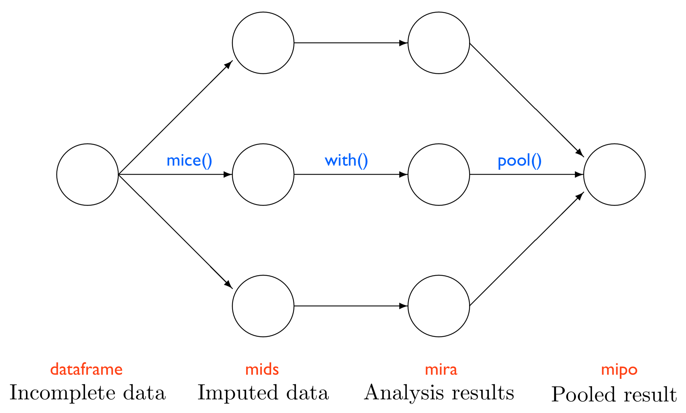
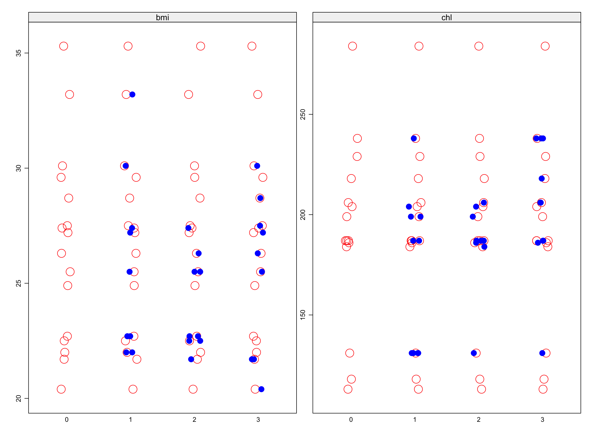

The core concepts and a simple example to get you up and running with MI in your next analysis.
Published
February 21, 2025
Welcome to Part 2 of our tutorial on missing data and multiple imputation. If you recall, we ended the last post with a brief introduction to MI and so today I am going to extend that discussion further with some specific, but important detail in how MI actually works via its implementation in R. Having a better understanding of the algorithmic process involved is invaluable in contextualising what is actually happening to your data when you incorporate MI into your analysis. As an expository aid, we will also apply MI to a small dataset which I hope will further build your practical intuition of this fairly complex statistical topic.
1 MI in R
In general, there are two primary approaches to MI and these are implemented by different packages in R.
Joint Multivariate Normal Distribution Multiple Imputation.
Joint modelling assumes that the observed data follows a multivariate normal distribution and consequently draws missing values from the same distribution. The biggest problem with this approach is that a distribution is assumed for the entire dataset, and this may not always be tenable, leading to incorrect imputations.
Conditional Multiple Imputation
In contrast, the conditional approach is iterative, modelling the conditional distribution of one variable, given the other variables. In this way a different distribution may be assumed for each variable, rather than fixing the entire dataset to one distribution. The conditional MI approach tends to be more commonly used due to this enhanced flexibility and the procedure is implemented in the mice (multivariate imputation by chained equations) package in R. This is the approach we will focus on for the remainder of this tutorial.
2 The mice Package
2.1 Example Data
Before we go any further, let me introduce a small dataset included in the mice package that we will use to illustrate conditional MI in action. The nhanes2 dataset contains sample data from the US National Health and Nutrition Examination Study. It consists of 25 observations of 4 variables:
age - Age group (1=20-39, 2=40-59, 3=60+)
bmi - Body mass index (kg/m^2)
hyp - Hypertensive (1=no,2=yes)
chl - Total serum cholesterol (mg/dL)
age and hyp are formatted as factors and bmi and chl as numeric. The data look like:
# A tibble: 25 × 4
age bmi hyp chl
<fct> <dbl> <fct> <dbl>
1 20-39 NA <NA> NA
2 40-59 22.7 no 187
3 20-39 NA no 187
4 60-99 NA <NA> NA
5 20-39 20.4 no 113
6 60-99 NA <NA> 184
7 20-39 22.5 no 118
8 20-39 30.1 no 187
9 40-59 22 no 238
10 40-59 NA <NA> NA
11 20-39 NA <NA> NA
12 40-59 NA <NA> NA
13 60-99 21.7 no 206
14 40-59 28.7 yes 204
15 20-39 29.6 no NA
16 20-39 NA <NA> NA
17 60-99 27.2 yes 284
18 40-59 26.3 yes 199
19 20-39 35.3 no 218
20 60-99 25.5 yes NA
21 20-39 NA <NA> NA
22 20-39 33.2 no 229
23 20-39 27.5 no 131
24 60-99 24.9 no NA
25 40-59 27.4 no 186
Note there is some missingness on all variables except age.
2.2 Overview
In the last post I suggested that MI can be thought of in broad terms as a three-step procedure: imputation, analysis, and pooling. Using the mice package, each of these steps can be equated with a function (blue) and resulting object (red) in your R workspace - in short:
mice() imputes the data, producing a mids object
with() analyses the data, producing a mira object
pool() combines the data, producing a mipo object

Main Steps in MI
So, imagine that we have our nhanes2 dataset and we want to explore the relationship between bmi (as the outcome) and age, hyp and chl (as predictors). If we just go ahead and run a linear regression with the data as is, we get:
Code
lm(bmi ~ age + hyp + chl, data = nhanes2) |>tbl_regression() |>add_glance_source_note()
Everything seems to look ok - regression coefficients seem plausible and standard errors haven’t blown up. But if you look at the table footer you will see that R’s default setting of listwise deletion, means that only 13 observations have been able to be used. The model has discarded 48% of the data. “Unacceptable!” you say. Not only have we lost a decent amount of power (and maybe that wouldn’t concern you so much with a larger dataset), but we are also potentially at risk of bias if our missing data mechanism isn’t MCAR (which is what complete case analysis assumes).
Given I want to show you how to use MI, I am going to do that regardless of whether these data are MCAR or not. So, I will leave as an exercise for you to test the MCAR assumption based on what I have shown you in the previous post, if you are interested (I actually haven’t looked at this so I don’t know whether MCAR may be considered reasonable in this case).
So let’s run through the steps that mice uses if we were to impute these data.
As the first step, the mice() function creates several complete datasets (in the above we have set this to n = 3). It considers the missingness in each variable to adhere to a particular distribution, drawing plausible values from this distribution as “placeholders” for the missing values. These “complete” datasets are then stored in an R object class called mids (which is an abbreviation of “multiply imputed dataset”). Each dataset is a copy of the original dataframe, except that the missing values are now replaced by those generated by mice().
Note
I call these values placeholders as they are not fixed or actually observed, but merely serve to allow estimation of the parameter and its variance.
In the second step, we now analyse each of our three complete datasets. Using the with() function, we run the same linear regression model as above on each dataframe of 25 observations, obtaining three different regression coefficients for each parameter. These coefficients only differ due to the differences in the imputed values across each dataset. The analysis results are then stored in another R object class called mira (“multiply imputed repeated analysis”).
In the third and final step, we pool the three coefficients from separate models into one overall regression coefficient for each parameter, and estimate its variance using the pool() function. The final coefficient is the simple average of the three separate coefficients. As described in the last post, the variance estimate combines both “within” (dataset) and “between” (dataset) variance components. The pooled results are stored in a mipo - “multiple imputation pooled object” - object class in your R environment. This becomes the object that you are interested in reporting the results from.
There is one other function in the mice package that is worth a mention - complete(). While this function isn’t essential in the MI pipeline it is nonetheless a very helpful tool in examining the imputed datasets, and I will show you its usage, along with the other primary functions, shortly.
2.3 Iterations Within Imputations
There is one last bit of theory we will cover before we get to the practical example. In my understanding of MI, I found it super-helpful to have a cursory working knowledge of the chained equation equation approach. As I think this will also help you, we’ll take a few minutes to flesh out some of the detail in what the procedure is actually doing in the background when you call mice() on your data.
Recall that in essence the mice procedure runs a series of regression models whereby each variable with missing data is regressed conditional on the other variables present. In this way, variables that differ in their distribution can be modelled as such - for example, logistic regression for binary variables or linear regression for continuous. More explicitly, the chained equation process can be broken down into one “cycle” or iteration, consisting of five steps:
Iteration start -
Step 1: Every missing value in the dataset is replaced with a simple (single) imputation, such as the mean or median.
Step 2: For one variable - let’s call this “mi_var” - the simple imputations are set back to missing.
Step 3: The observed values from “mi_var” in Step 2 are regressed (as the outcome) on the other variables (as predictors) in the imputation model, which may or may not consist of all remaining variables in the dataset. The distribution of “mi_var” is selected as appropriate for that variable.
Step 4: The missing values for “mi_var” are then replaced with predictions (imputations) from the regression model.
Step 5: Repeat Steps 2-4 for each variable that has missing data. Note that at the end of Step 4 “mi_var” may serve as a predictor for any other variable with missing data, whereby both the observed and imputed values will be used to predict that variable’s missing values.
- Iteration end
At the end of one iteration, all variables with missing data will have been replaced with predictions (imputations) from regression models that represent the associations observed in the data. Usually multiple iterations (ten is considered standard) are specified with the imputations being updated at the end of each cycle. Enough iterations should be specified to establish with confidence that the imputation parameter estimates (regression coefficients) should “converge” so they are no longer changing, within some tolerance, in a new cycle.
So, when we think of Inception as a movie about layers (dreams within dreams), it can be helpful to think of MI in a similar way, as also consisting of layers (iterations within imputations). Each call to mice() produces multiple imputed datasets where each imputed dataset is itself the result of multiple iterations. Hopefully your brain doesn’t hurt like mine did when I watched Inception!
3 Practical Application of MI
Ok, enough talking. Let’s actually work through an example - we’ll use the nhanes2 dataset I introduced above.
3.1 Inspect
It’s always a good idea to first take a couple of minutes to inspect and/or visualise the missing values and any potential patterns in the data. Let’s first check the number and proportion of missing values for each variable. We could code this ourselves, but there’s actually a handy little function especially for this in the questionr package:
Code
library(questionr)freq.na(nhanes2)
missing %
chl 10 40
bmi 9 36
hyp 8 32
age 0 0
We can extend this further to look for patterns of missing values and mice provides the md.pattern() function for this. An equivalent plot and tabulation are supplied by default but it is possible to suppress the plot if one wishes.
Values are either 0 (missing) or 1 (observed). From top to bottom, we read this as:
13 people have no missing data.
3 people have missingness on chl only.
1 person has missingness on bmi only.
1 person has missingness on hyp and bmi only.
7 people have missingness on hyp, bmi and chl.
The numbers in the bottom row represent the frequencies of missingness on each variable and the resulting marginal total (far right). The numbers in the right-most column represent the number of variables with missingness in each pattern.
3.2 mice()
Now, let’s do the imputation. It’s as simple as calling the mice() function on our dataset, but here I will specify 3 imputations rather than the default of 5.
Code
set.seed(1234)imp <-mice(nhanes2, m =3, print =FALSE)imp
Class: mids
Number of multiple imputations: 3
Imputation methods:
age bmi hyp chl
"" "pmm" "logreg" "pmm"
PredictorMatrix:
age bmi hyp chl
age 0 1 1 1
bmi 1 0 1 1
hyp 1 1 0 1
chl 1 1 1 0
By inspecting the resulting mids object, we can see that mice() used pmm (predictive mean matching) to impute all the variables except hyp which used logistic regression (logreg) instead, given this is a binary variable. Note that variables with no missing values will have no method (““) specified because no imputation is actually needed.
Note
pmm is the recommended and default method for the imputation of continuous data in mice()
The output also shows the predictorMatrix which determines what variables are used in the imputation of another. It is useful to familiarise yourself with this matrix as you may want to customise imputations at some point and amending the predictorMatrix provides such functionality. You can interpret the predictorMatrix as rows corresponding to incomplete target variables and columns as complete predictor variables. A value of 1 indicates that the column variable acts as a predictor to impute the target (row) variable, and a 0 means that it is not used. Thus, in our example, hyp is predicted from age, bmi and chl. Note that the diagonal is set to 0 since variables cannot predict themselves. The default setting of the predictorMatrix specifies that every variable predicts all others.
As a relatively quick diagnostic exercise, we can easily examine the correspondence between observed and imputed values (for the continuous variables at least) by using the stripplot() function. Note that mice provides other graphical tools for this that are also worth exploring.
Code
stripplot(imp, col =c("red", "blue"), pch =c(1, 20), cex =c(2, 2))

The plots show relatively good overlap of the imputed values (in blue) with the original non-missing data (red).
3.3 complete()
At this point you may actually want to look at the imputed values and datasets themselves. mice makes this easy with the complete() function and while this isn’t integral to the workflow, it can be useful as another plausiblity check that the imputations are working as they should. There are multiple formats that we can view the imputed data in, and I will show you what I consider are the three main ways. In all cases, each observation will be labelled with its imputation number and I will also include the original data (imputation = 0) for comparison.
3.3.1 “all”
Using “all” produces a list, where each imputed dataframe becomes an element of that list.
Code
imp_all <-complete(imp, "all", include = T)imp_all
$`0`
age bmi hyp chl
1 20-39 NA <NA> NA
2 40-59 22.7 no 187
3 20-39 NA no 187
4 60-99 NA <NA> NA
5 20-39 20.4 no 113
6 60-99 NA <NA> 184
7 20-39 22.5 no 118
8 20-39 30.1 no 187
9 40-59 22.0 no 238
10 40-59 NA <NA> NA
11 20-39 NA <NA> NA
12 40-59 NA <NA> NA
13 60-99 21.7 no 206
14 40-59 28.7 yes 204
15 20-39 29.6 no NA
16 20-39 NA <NA> NA
17 60-99 27.2 yes 284
18 40-59 26.3 yes 199
19 20-39 35.3 no 218
20 60-99 25.5 yes NA
21 20-39 NA <NA> NA
22 20-39 33.2 no 229
23 20-39 27.5 no 131
24 60-99 24.9 no NA
25 40-59 27.4 no 186
$`1`
age bmi hyp chl
1 20-39 30.1 yes 131
2 40-59 22.7 no 187
3 20-39 22.0 no 187
4 60-99 22.7 yes 187
5 20-39 20.4 no 113
6 60-99 25.5 yes 184
7 20-39 22.5 no 118
8 20-39 30.1 no 187
9 40-59 22.0 no 238
10 40-59 27.4 yes 204
11 20-39 33.2 no 199
12 40-59 22.7 yes 187
13 60-99 21.7 no 206
14 40-59 28.7 yes 204
15 20-39 29.6 no 199
16 20-39 27.2 no 238
17 60-99 27.2 yes 284
18 40-59 26.3 yes 199
19 20-39 35.3 no 218
20 60-99 25.5 yes 131
21 20-39 22.0 no 131
22 20-39 33.2 no 229
23 20-39 27.5 no 131
24 60-99 24.9 no 131
25 40-59 27.4 no 186
$`2`
age bmi hyp chl
1 20-39 22.5 no 187
2 40-59 22.7 no 187
3 20-39 25.5 no 187
4 60-99 27.4 yes 204
5 20-39 20.4 no 113
6 60-99 21.7 no 184
7 20-39 22.5 no 118
8 20-39 30.1 no 187
9 40-59 22.0 no 238
10 40-59 22.7 yes 187
11 20-39 22.5 no 187
12 40-59 25.5 yes 184
13 60-99 21.7 no 206
14 40-59 28.7 yes 204
15 20-39 29.6 no 199
16 20-39 22.7 no 131
17 60-99 27.2 yes 284
18 40-59 26.3 yes 199
19 20-39 35.3 no 218
20 60-99 25.5 yes 206
21 20-39 26.3 no 187
22 20-39 33.2 no 229
23 20-39 27.5 no 131
24 60-99 24.9 no 186
25 40-59 27.4 no 186
$`3`
age bmi hyp chl
1 20-39 27.2 no 187
2 40-59 22.7 no 187
3 20-39 26.3 no 187
4 60-99 21.7 no 186
5 20-39 20.4 no 113
6 60-99 21.7 no 184
7 20-39 22.5 no 118
8 20-39 30.1 no 187
9 40-59 22.0 no 238
10 40-59 25.5 no 187
11 20-39 28.7 yes 238
12 40-59 27.5 yes 206
13 60-99 21.7 no 206
14 40-59 28.7 yes 204
15 20-39 29.6 no 131
16 20-39 30.1 no 238
17 60-99 27.2 yes 284
18 40-59 26.3 yes 199
19 20-39 35.3 no 218
20 60-99 25.5 yes 218
21 20-39 20.4 no 238
22 20-39 33.2 no 229
23 20-39 27.5 no 131
24 60-99 24.9 no 206
25 40-59 27.4 no 186
attr(,"class")
[1] "mild" "list"
3.3.2 “long”
Using “long” produces a dataframe of imputations stacked on top of each other. Imputation and ID numbers are provided as variables to identify which observations belong to which imputations.
Code
imp_long <-complete(imp, "long", include = T)imp_long |>tibble() |>print(n =Inf)
# A tibble: 100 × 6
.imp .id age bmi hyp chl
<int> <int> <fct> <dbl> <fct> <dbl>
1 0 1 20-39 NA <NA> NA
2 0 2 40-59 22.7 no 187
3 0 3 20-39 NA no 187
4 0 4 60-99 NA <NA> NA
5 0 5 20-39 20.4 no 113
6 0 6 60-99 NA <NA> 184
7 0 7 20-39 22.5 no 118
8 0 8 20-39 30.1 no 187
9 0 9 40-59 22 no 238
10 0 10 40-59 NA <NA> NA
11 0 11 20-39 NA <NA> NA
12 0 12 40-59 NA <NA> NA
13 0 13 60-99 21.7 no 206
14 0 14 40-59 28.7 yes 204
15 0 15 20-39 29.6 no NA
16 0 16 20-39 NA <NA> NA
17 0 17 60-99 27.2 yes 284
18 0 18 40-59 26.3 yes 199
19 0 19 20-39 35.3 no 218
20 0 20 60-99 25.5 yes NA
21 0 21 20-39 NA <NA> NA
22 0 22 20-39 33.2 no 229
23 0 23 20-39 27.5 no 131
24 0 24 60-99 24.9 no NA
25 0 25 40-59 27.4 no 186
26 1 1 20-39 30.1 yes 131
27 1 2 40-59 22.7 no 187
28 1 3 20-39 22 no 187
29 1 4 60-99 22.7 yes 187
30 1 5 20-39 20.4 no 113
31 1 6 60-99 25.5 yes 184
32 1 7 20-39 22.5 no 118
33 1 8 20-39 30.1 no 187
34 1 9 40-59 22 no 238
35 1 10 40-59 27.4 yes 204
36 1 11 20-39 33.2 no 199
37 1 12 40-59 22.7 yes 187
38 1 13 60-99 21.7 no 206
39 1 14 40-59 28.7 yes 204
40 1 15 20-39 29.6 no 199
41 1 16 20-39 27.2 no 238
42 1 17 60-99 27.2 yes 284
43 1 18 40-59 26.3 yes 199
44 1 19 20-39 35.3 no 218
45 1 20 60-99 25.5 yes 131
46 1 21 20-39 22 no 131
47 1 22 20-39 33.2 no 229
48 1 23 20-39 27.5 no 131
49 1 24 60-99 24.9 no 131
50 1 25 40-59 27.4 no 186
51 2 1 20-39 22.5 no 187
52 2 2 40-59 22.7 no 187
53 2 3 20-39 25.5 no 187
54 2 4 60-99 27.4 yes 204
55 2 5 20-39 20.4 no 113
56 2 6 60-99 21.7 no 184
57 2 7 20-39 22.5 no 118
58 2 8 20-39 30.1 no 187
59 2 9 40-59 22 no 238
60 2 10 40-59 22.7 yes 187
61 2 11 20-39 22.5 no 187
62 2 12 40-59 25.5 yes 184
63 2 13 60-99 21.7 no 206
64 2 14 40-59 28.7 yes 204
65 2 15 20-39 29.6 no 199
66 2 16 20-39 22.7 no 131
67 2 17 60-99 27.2 yes 284
68 2 18 40-59 26.3 yes 199
69 2 19 20-39 35.3 no 218
70 2 20 60-99 25.5 yes 206
71 2 21 20-39 26.3 no 187
72 2 22 20-39 33.2 no 229
73 2 23 20-39 27.5 no 131
74 2 24 60-99 24.9 no 186
75 2 25 40-59 27.4 no 186
76 3 1 20-39 27.2 no 187
77 3 2 40-59 22.7 no 187
78 3 3 20-39 26.3 no 187
79 3 4 60-99 21.7 no 186
80 3 5 20-39 20.4 no 113
81 3 6 60-99 21.7 no 184
82 3 7 20-39 22.5 no 118
83 3 8 20-39 30.1 no 187
84 3 9 40-59 22 no 238
85 3 10 40-59 25.5 no 187
86 3 11 20-39 28.7 yes 238
87 3 12 40-59 27.5 yes 206
88 3 13 60-99 21.7 no 206
89 3 14 40-59 28.7 yes 204
90 3 15 20-39 29.6 no 131
91 3 16 20-39 30.1 no 238
92 3 17 60-99 27.2 yes 284
93 3 18 40-59 26.3 yes 199
94 3 19 20-39 35.3 no 218
95 3 20 60-99 25.5 yes 218
96 3 21 20-39 20.4 no 238
97 3 22 20-39 33.2 no 229
98 3 23 20-39 27.5 no 131
99 3 24 60-99 24.9 no 206
100 3 25 40-59 27.4 no 186
3.3.3 “broad”
In contrast, the “broad” or wide format produces a dataframe of imputations stacked side-by-side. Imputation numbers are included in the variable names.
# A tibble: 25 × 16
age.0 bmi.0 hyp.0 chl.0 age.1 bmi.1 hyp.1 chl.1 age.2 bmi.2 hyp.2 chl.2 age.3
<fct> <dbl> <fct> <dbl> <fct> <dbl> <fct> <dbl> <fct> <dbl> <fct> <dbl> <fct>
1 20-39 NA <NA> NA 20-39 30.1 yes 131 20-39 22.5 no 187 20-39
2 40-59 22.7 no 187 40-59 22.7 no 187 40-59 22.7 no 187 40-59
3 20-39 NA no 187 20-39 22 no 187 20-39 25.5 no 187 20-39
4 60-99 NA <NA> NA 60-99 22.7 yes 187 60-99 27.4 yes 204 60-99
5 20-39 20.4 no 113 20-39 20.4 no 113 20-39 20.4 no 113 20-39
6 60-99 NA <NA> 184 60-99 25.5 yes 184 60-99 21.7 no 184 60-99
7 20-39 22.5 no 118 20-39 22.5 no 118 20-39 22.5 no 118 20-39
8 20-39 30.1 no 187 20-39 30.1 no 187 20-39 30.1 no 187 20-39
9 40-59 22 no 238 40-59 22 no 238 40-59 22 no 238 40-59
10 40-59 NA <NA> NA 40-59 27.4 yes 204 40-59 22.7 yes 187 40-59
11 20-39 NA <NA> NA 20-39 33.2 no 199 20-39 22.5 no 187 20-39
12 40-59 NA <NA> NA 40-59 22.7 yes 187 40-59 25.5 yes 184 40-59
13 60-99 21.7 no 206 60-99 21.7 no 206 60-99 21.7 no 206 60-99
14 40-59 28.7 yes 204 40-59 28.7 yes 204 40-59 28.7 yes 204 40-59
15 20-39 29.6 no NA 20-39 29.6 no 199 20-39 29.6 no 199 20-39
16 20-39 NA <NA> NA 20-39 27.2 no 238 20-39 22.7 no 131 20-39
17 60-99 27.2 yes 284 60-99 27.2 yes 284 60-99 27.2 yes 284 60-99
18 40-59 26.3 yes 199 40-59 26.3 yes 199 40-59 26.3 yes 199 40-59
19 20-39 35.3 no 218 20-39 35.3 no 218 20-39 35.3 no 218 20-39
20 60-99 25.5 yes NA 60-99 25.5 yes 131 60-99 25.5 yes 206 60-99
21 20-39 NA <NA> NA 20-39 22 no 131 20-39 26.3 no 187 20-39
22 20-39 33.2 no 229 20-39 33.2 no 229 20-39 33.2 no 229 20-39
23 20-39 27.5 no 131 20-39 27.5 no 131 20-39 27.5 no 131 20-39
24 60-99 24.9 no NA 60-99 24.9 no 131 60-99 24.9 no 186 60-99
25 40-59 27.4 no 186 40-59 27.4 no 186 40-59 27.4 no 186 40-59
# ℹ 3 more variables: bmi.3 <dbl>, hyp.3 <fct>, chl.3 <dbl>
3.3.4 View just one imputation
All good you say, but what if I want to view just one imputation. Well you can do that quite easily in the call to complete(). Here we will ask for just the second imputation.
Code
complete(imp, 2) |>tibble() |>print(n =Inf)
# A tibble: 25 × 4
age bmi hyp chl
<fct> <dbl> <fct> <dbl>
1 20-39 22.5 no 187
2 40-59 22.7 no 187
3 20-39 25.5 no 187
4 60-99 27.4 yes 204
5 20-39 20.4 no 113
6 60-99 21.7 no 184
7 20-39 22.5 no 118
8 20-39 30.1 no 187
9 40-59 22 no 238
10 40-59 22.7 yes 187
11 20-39 22.5 no 187
12 40-59 25.5 yes 184
13 60-99 21.7 no 206
14 40-59 28.7 yes 204
15 20-39 29.6 no 199
16 20-39 22.7 no 131
17 60-99 27.2 yes 284
18 40-59 26.3 yes 199
19 20-39 35.3 no 218
20 60-99 25.5 yes 206
21 20-39 26.3 no 187
22 20-39 33.2 no 229
23 20-39 27.5 no 131
24 60-99 24.9 no 186
25 40-59 27.4 no 186
3.3.5 Compare imputed values
If you want to compare the imputed values in a more direct way, we can use the broad format to do that on a variable by variable basis. Here I will ask to look at just bmi.
Code
complete(imp, "broad", include = T) |>select(contains("bmi")) |>tibble() |>print(n =Inf)
bmi.0 is the original bmi data and the columns to its right are each of the three imputations for that variable. This provides an easy way to scan across and examine what mice has given us.
3.4 with()
Now that we have imputed the data, we can use with() to analyse the data. Generally there is not much need to inspect the output of this step and we usually go straight onto pooling the results, but for the sake of the exercise we will take a closer look at the mira object that is generated. So, let’s run the regression model that we specified earlier, with bmi as the outcome and age, hyp and chl as predictors.
Code
fit_imp <-with(imp, lm(bmi ~ age + hyp + chl))summary(fit_imp)
See how we obtain the regression output for each imputed dataset stacked one on top of the other in a single dataframe. This allows us to quickly compare the estimated regression parameters across imputations.
3.5 pool()
We can now call pool() to pool the results of the separate regressions based on Rubin’s rules.
There are certainly some differences in the regression coefficients - most notable for age. Interestingly age had no missingness in the original data, so MI is likely facilitating more accurate estimation of the age parameters given we are able to utilise all of the available data by not throwing almost half of it away (as in the CCA). Obviously we cannot say with certainty what the true population parameters are, as these are not simulated data, but it would be reasonable to assume that MI provides a more valid (less biased) analysis.
4 Conclusion
I think that’s probably more than enough for this post. What we have covered today are really just the basics of MI using mice. You have no doubt surmised by now that missing data is a fairly complex topic in applied biostatistics, and one that extends into more advanced areas that we haven’t even considered in these posts. There are many other considerations in MI, including:
How to impute derived variables (e.g. ratios, interaction terms, quadratic terms, etc).
How to impute for multilevel (repeated measures) models.
How to predict after MI (this is not straightforward).
A good starting point if you want to do more reading on missing data and MI is Stef van Buuren’s “bible” on the topic - “Flexible Imputation of Missing Data”. A free online version is available at https://stefvanbuuren.name/fimd/. It is well worth bookmarking as a reference text to help you in your missing data analysis endeavours. A paper that goes in some way to addressing the final issue of prediction can be found here and is also worth checking out.
Ok team, I hope you have found these posts useful. Until next time…
Source Code
---title: "Missing Data and Multiple Imputation for Dummies <br> (Part 2)"date: 2025-02-21categories: [code, concept, analysis]#image: "images/mi_flow.png"description: "The core concepts and a simple example to get you up and running with MI in your next analysis."format: html: df-print: tibble---Welcome to Part 2 of our tutorial on missing data and multiple imputation. If you recall, we ended the last post with a brief introduction to MI and so today I am going to extend that discussion further with some specific, but important detail in how MI actually works via its implementation in `R`. Having a better understanding of the algorithmic process involved is invaluable in contextualising what is actually happening to your data when you incorporate MI into your analysis. As an expository aid, we will also apply MI to a small dataset which I hope will further build your practical intuition of this fairly complex statistical topic.# MI in RIn general, there are two primary approaches to MI and these are implemented by different packages in `R`.- Joint Multivariate Normal Distribution Multiple Imputation. Joint modelling assumes that the observed data follows a multivariate normal distribution and consequently draws missing values from the same distribution. The biggest problem with this approach is that **a distribution is assumed for the entire dataset**, and this may not always be tenable, leading to incorrect imputations.- Conditional Multiple Imputation In contrast, the conditional approach is iterative, modelling **the conditional distribution of one variable, given the other variables**. In this way a different distribution may be assumed for each variable, rather than fixing the entire dataset to one distribution. The conditional MI approach tends to be more commonly used due to this enhanced flexibility and the procedure is implemented in the `mice` (multivariate imputation by chained equations) package in `R`. This is the approach we will focus on for the remainder of this tutorial.# The mice Package## Example DataBefore we go any further, let me introduce a small dataset included in the `mice` package that we will use to illustrate conditional MI in action. The `nhanes2` dataset contains sample data from the US National Health and Nutrition Examination Study. It consists of `25` observations of `4` variables:- **age** - Age group (1=20-39, 2=40-59, 3=60+)- **bmi** - Body mass index (kg/m\^2)- **hyp** - Hypertensive (1=no,2=yes)- **chl** - Total serum cholesterol (mg/dL)**age** and **hyp** are formatted as factors and **bmi** and **chl** as numeric. The data look like:```{r}#| message: false#| warning: falselibrary(tidyverse)library(mice)library(gtsummary)data(nhanes2)nhanes2 |>tibble() |>print(n =Inf)```Note there is some missingness on all variables except **age**.## OverviewIn the last post I suggested that MI can be thought of in broad terms as a three-step procedure: imputation, analysis, and pooling. Using the `mice` package, each of these steps can be equated with a function (blue) and resulting object (red) in your `R` workspace - in short:1. `mice()` imputes the data, producing a `mids` object2. `with()` analyses the data, producing a `mira` object3. `pool()` combines the data, producing a `mipo` object{fig-align="center"}So, imagine that we have our `nhanes2` dataset and we want to explore the relationship between **bmi** (as the outcome) and **age**, **hyp** and **chl** (as predictors). If we just go ahead and run a linear regression with the data as is, we get:```{r}lm(bmi ~ age + hyp + chl, data = nhanes2) |>tbl_regression() |>add_glance_source_note()```Everything seems to look ok - regression coefficients seem plausible and standard errors haven't blown up. But if you look at the table footer you will see that `R`'s default setting of listwise deletion, means that only `13` observations have been able to be used. The model has discarded `48%` of the data. "Unacceptable!" you say. Not only have we lost a decent amount of power (and maybe that wouldn't concern you so much with a larger dataset), but we are also potentially at risk of bias if our missing data mechanism isn't MCAR (which is what complete case analysis assumes).Given I want to show you how to use MI, I am going to do that regardless of whether these data are MCAR or not. So, I will leave as an exercise for you to test the MCAR assumption based on what I have shown you in the previous post, if you are interested (I actually haven't looked at this so I don't know whether MCAR may be considered reasonable in this case).So let's run through the steps that `mice` uses if we were to impute these data.As the first step, the `mice()` function creates several complete datasets (in the above we have set this to n = `3`). It considers the missingness in each variable to adhere to a particular distribution, drawing plausible values from this distribution as "placeholders" for the missing values. These "complete" datasets are then stored in an `R` object class called `mids` (which is an abbreviation of "multiply imputed dataset"). Each dataset is a copy of the original dataframe, **except** that the missing values are now replaced by those generated by `mice()`.::: callout-noteI call these values placeholders as they are not fixed or actually observed, but merely serve to allow estimation of the parameter and its variance.:::In the second step, we now analyse each of our three complete datasets. Using the `with()` function, we run the same linear regression model as above on each dataframe of `25` observations, obtaining three different regression coefficients for each parameter. These coefficients only differ due to the differences in the imputed values across each dataset. The analysis results are then stored in another `R` object class called `mira` ("multiply imputed repeated analysis").In the third and final step, we pool the three coefficients from separate models into one overall regression coefficient for each parameter, and estimate its variance using the `pool()` function. The final coefficient is the simple average of the three separate coefficients. As described in the last post, the variance estimate combines both "within" (dataset) and "between" (dataset) variance components. The pooled results are stored in a `mipo` - "multiple imputation pooled object" - object class in your `R` environment. This becomes the object that you are interested in reporting the results from.There is one other function in the `mice` package that is worth a mention - `complete()`. While this function isn't essential in the MI pipeline it is nonetheless a very helpful tool in examining the imputed datasets, and I will show you its usage, along with the other primary functions, shortly.## Iterations Within ImputationsThere is one last bit of theory we will cover before we get to the practical example. In my understanding of MI, I found it super-helpful to have a cursory working knowledge of the chained equation equation approach. As I think this will also help you, we'll take a few minutes to flesh out some of the detail in what the procedure is actually doing in the background when you call `mice()` on your data.Recall that in essence the mice procedure runs a series of regression models whereby each variable with missing data is regressed conditional on the other variables present. In this way, variables that differ in their distribution can be modelled as such - for example, logistic regression for binary variables or linear regression for continuous. More explicitly, **the chained equation process can be broken down into one "cycle" or iteration, consisting of five steps**:**Iteration start** -- Step 1: Every missing value in the dataset is replaced with a simple (single) imputation, such as the mean or median.- Step 2: For one variable - let's call this "mi_var" - the simple imputations are set back to missing.- Step 3: The observed values from "mi_var" in Step 2 are regressed (as the outcome) on the other variables (as predictors) in the imputation model, which may or may not consist of all remaining variables in the dataset. The distribution of "mi_var" is selected as appropriate for that variable.- Step 4: The missing values for "mi_var" are then replaced with predictions (imputations) from the regression model.- Step 5: Repeat Steps 2-4 for each variable that has missing data. Note that at the end of Step 4 "mi_var" may serve as a predictor for any other variable with missing data, whereby both the observed and imputed values will be used to predict that variable's missing values.**- Iteration end**At the end of one iteration, all variables with missing data will have been replaced with predictions (imputations) from regression models that represent the associations observed in the data. Usually multiple iterations (ten is considered standard) are specified with the imputations being updated at the end of each cycle. Enough iterations should be specified to establish with confidence that the imputation parameter estimates (regression coefficients) should "converge" so they are no longer changing, within some tolerance, in a new cycle.So, when we think of [Inception](https://en.wikipedia.org/wiki/Inception) as a movie about layers (dreams within dreams), it can be helpful to think of MI in a similar way, as also consisting of layers (iterations within imputations). Each call to `mice()` produces multiple imputed datasets where each imputed dataset is itself the result of multiple iterations. Hopefully your brain doesn't hurt like mine did when I watched Inception!# Practical Application of MIOk, enough talking. Let's actually work through an example - we'll use the `nhanes2` dataset I introduced above.## InspectIt's always a good idea to first take a couple of minutes to inspect and/or visualise the missing values and any potential patterns in the data. Let's first check the number and proportion of missing values for each variable. We could code this ourselves, but there's actually a handy little function especially for this in the `questionr` package:```{r}library(questionr)freq.na(nhanes2)```We can extend this further to look for patterns of missing values and `mice` provides the `md.pattern()` function for this. An equivalent plot and tabulation are supplied by default but it is possible to suppress the plot if one wishes.```{r}md.pattern(nhanes2)```Values are either 0 (missing) or 1 (observed). From top to bottom, we read this as:- `13` people have no missing data.- `3` people have missingness on **chl** only.- `1` person has missingness on **bmi** only.- `1` person has missingness on **hyp** and **bmi** only.- `7` people have missingness on **hyp**, **bmi** and **chl**.The numbers in the bottom row represent the frequencies of missingness on each variable and the resulting marginal total (far right). The numbers in the right-most column represent the number of variables with missingness in each pattern.## mice()Now, let's do the imputation. It's as simple as calling the `mice()` function on our dataset, but here I will specify `3` imputations rather than the default of `5`.```{r}set.seed(1234)imp <-mice(nhanes2, m =3, print =FALSE)imp```By inspecting the resulting `mids` object, we can see that `mice()` used **pmm** (predictive mean matching) to impute all the variables except **hyp** which used logistic regression (**logreg**) instead, given this is a binary variable. Note that variables with no missing values will have no method ("") specified because no imputation is actually needed.::: callout-note[pmm](https://stefvanbuuren.name/fimd/sec-pmm.html) is the recommended and default method for the imputation of continuous data in `mice()`:::The output also shows the `predictorMatrix` which determines what variables are used in the imputation of another. It is useful to familiarise yourself with this matrix as you may want to customise imputations at some point and amending the `predictorMatrix` provides such functionality. You can interpret the `predictorMatrix` as rows corresponding to incomplete target variables and columns as complete predictor variables. A value of `1` indicates that the column variable acts as a predictor to impute the target (row) variable, and a `0` means that it is not used. Thus, in our example, **hyp** is predicted from **age**, **bmi** and **chl**. Note that the diagonal is set to `0` since variables cannot predict themselves. The default setting of the `predictorMatrix` specifies that every variable predicts all others.As a relatively quick diagnostic exercise, we can easily examine the correspondence between observed and imputed values (for the continuous variables at least) by using the `stripplot()` function. Note that `mice` provides other graphical tools for this that are also worth exploring.```{r}stripplot(imp, col =c("red", "blue"), pch =c(1, 20), cex =c(2, 2))```The plots show relatively good overlap of the imputed values (in blue) with the original non-missing data (red).## complete()At this point you may actually want to look at the imputed values and datasets themselves. `mice` makes this easy with the `complete()` function and while this isn't integral to the workflow, it can be useful as another plausiblity check that the imputations are working as they should. There are multiple formats that we can view the imputed data in, and I will show you what I consider are the three main ways. In all cases, each observation will be labelled with its imputation number and I will also include the original data (imputation = 0) for comparison.### "all"Using "all" produces a list, where each imputed dataframe becomes an element of that list.```{r}imp_all <-complete(imp, "all", include = T)imp_all```### "long"Using "long" produces a dataframe of imputations stacked on top of each other. Imputation and ID numbers are provided as variables to identify which observations belong to which imputations.```{r}imp_long <-complete(imp, "long", include = T)imp_long |>tibble() |>print(n =Inf)```### "broad"In contrast, the "broad" or wide format produces a dataframe of imputations stacked side-by-side. Imputation numbers are included in the variable names.```{r}imp_wide <-complete(imp, "broad", include = T)imp_wide |>tibble() |>print(n =Inf)```### View just one imputationAll good you say, but what if I want to view just one imputation. Well you can do that quite easily in the call to `complete()`. Here we will ask for just the second imputation.```{r}complete(imp, 2) |>tibble() |>print(n =Inf)```### Compare imputed valuesIf you want to compare the imputed values in a more direct way, we can use the broad format to do that on a variable by variable basis. Here I will ask to look at just **bmi**.```{r}complete(imp, "broad", include = T) |>select(contains("bmi")) |>tibble() |>print(n =Inf)````bmi.0` is the original **bmi** data and the columns to its right are each of the three imputations for that variable. This provides an easy way to scan across and examine what `mice` has given us.## with()Now that we have imputed the data, we can use `with()` to analyse the data. Generally there is not much need to inspect the output of this step and we usually go straight onto pooling the results, but for the sake of the exercise we will take a closer look at the `mira` object that is generated. So, let's run the regression model that we specified earlier, with **bmi** as the outcome and **age**, **hyp** and **chl** as predictors.```{r}fit_imp <-with(imp, lm(bmi ~ age + hyp + chl))summary(fit_imp)```See how we obtain the regression output for each imputed dataset stacked one on top of the other in a single dataframe. This allows us to quickly compare the estimated regression parameters across imputations.## pool()We can now call `pool()` to pool the results of the separate regressions based on Rubin's rules.```{r}summary(pool(fit_imp), conf.int =TRUE)```Note that there is also a "tidy" way to format this output directly, using the `tbl_regression()` function, which provides for much nicer viewing.```{r}#| message: false#| warning: falsefit_imp |>tbl_regression() |>add_glance_source_note()```## Compare with CCAI will re-print the model output from the CCA so that we can compare it to the MI results:```{r}lm(bmi ~ age + hyp + chl, data = nhanes2) |>tbl_regression() |>add_glance_source_note()```There are certainly some differences in the regression coefficients - most notable for **age**. Interestingly **age** had no missingness in the original data, so MI is likely facilitating more accurate estimation of the age parameters given we are able to utilise all of the available data by not throwing almost half of it away (as in the CCA). Obviously we cannot say with certainty what the true population parameters are, as these are not simulated data, but it would be reasonable to assume that MI provides a more valid (less biased) analysis.# ConclusionI think that's probably more than enough for this post. What we have covered today are really just the basics of MI using `mice`. You have no doubt surmised by now that missing data is a fairly complex topic in applied biostatistics, and one that extends into more advanced areas that we haven't even considered in these posts. There are many other considerations in MI, including:- How to impute derived variables (e.g. ratios, interaction terms, quadratic terms, etc).- How to impute for multilevel (repeated measures) models.- How to predict after MI (this is not straightforward).A good starting point if you want to do more reading on missing data and MI is Stef van Buuren's "bible" on the topic - "Flexible Imputation of Missing Data". A free online version is available at <https://stefvanbuuren.name/fimd/>. It is well worth bookmarking as a reference text to help you in your missing data analysis endeavours. A paper that goes in some way to addressing the final issue of prediction can be found [here](https://journals.sagepub.com/doi/abs/10.1177/0049124115610345) and is also worth checking out.Ok team, I hope you have found these posts useful. Until next time...